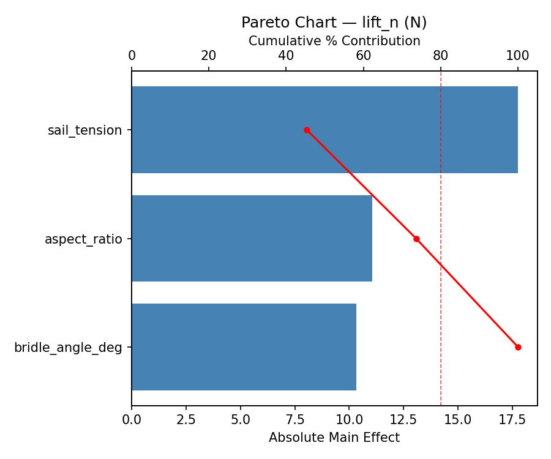
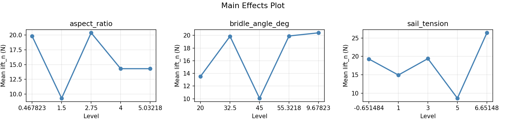
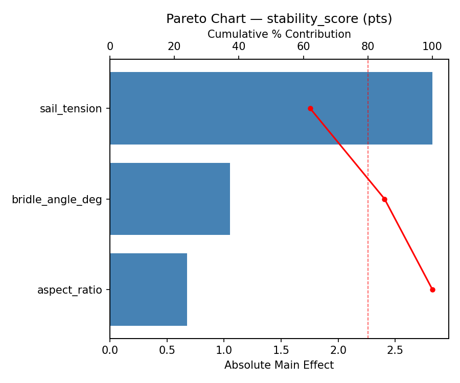
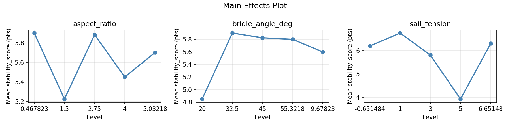
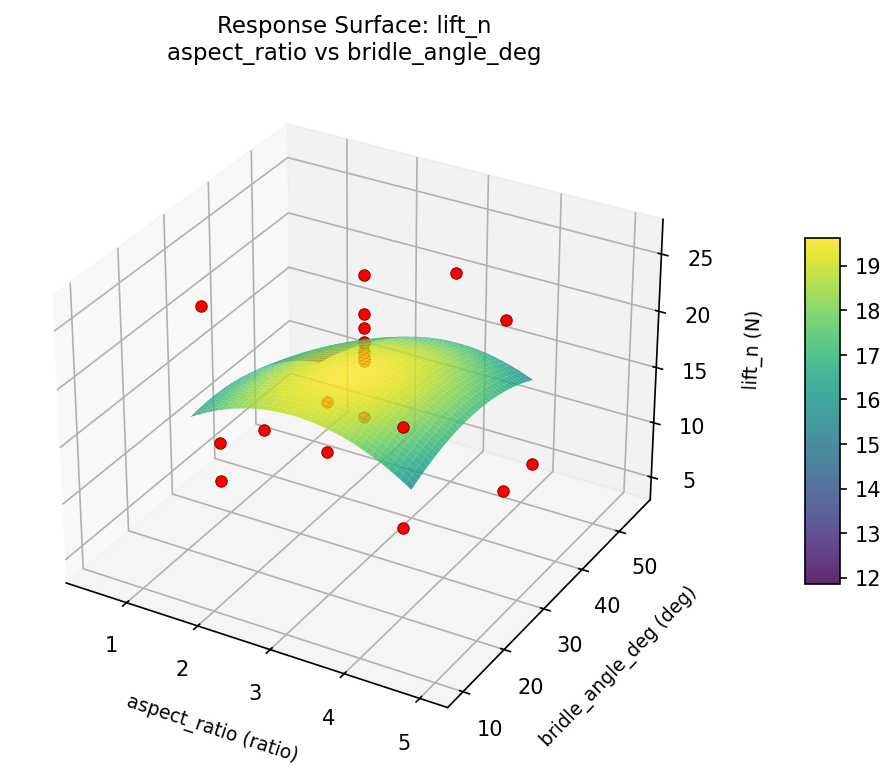
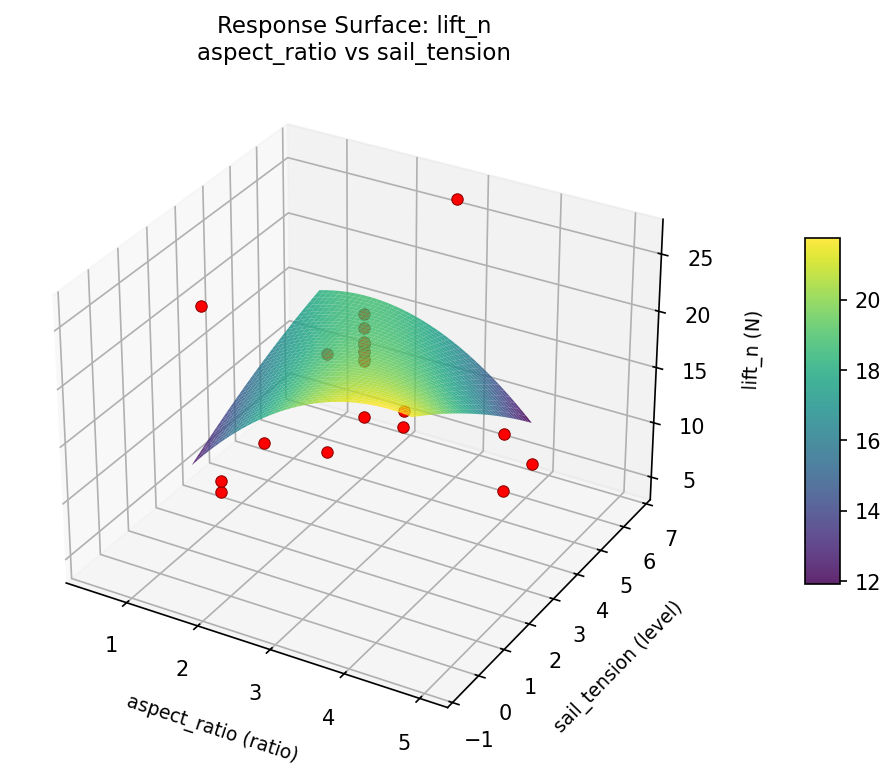
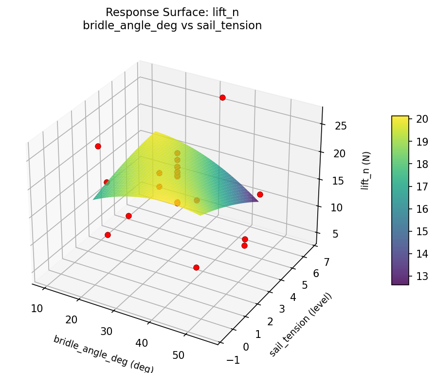
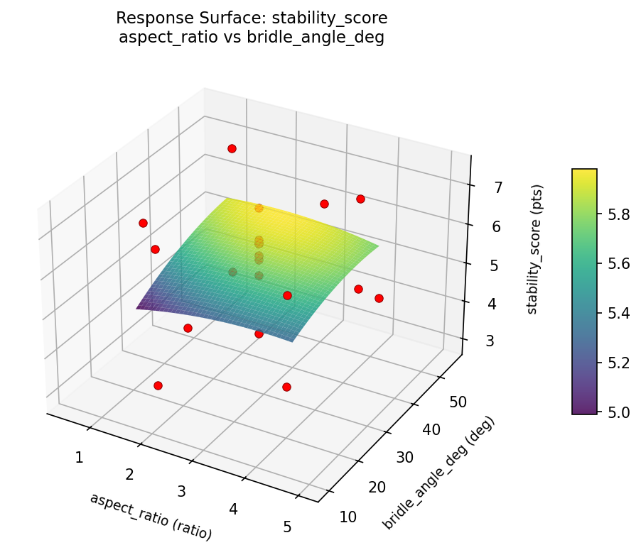
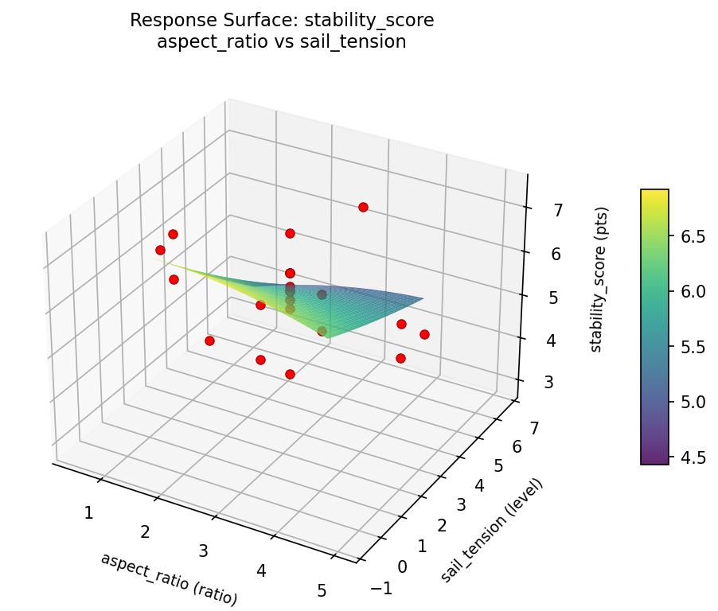

Summary
This experiment investigates kite aerodynamic design. Central composite design to maximize lift and stability by tuning aspect ratio, bridle angle, and sail tension.
The design varies 3 factors: aspect ratio (ratio), ranging from 1.5 to 4.0, bridle angle deg (deg), ranging from 20 to 45, and sail tension (level), ranging from 1 to 5. The goal is to optimize 2 responses: lift n (N) (maximize) and stability score (pts) (maximize). Fixed conditions held constant across all runs include material = ripstop_nylon, area = 2m2.
A Central Composite Design (CCD) was selected to fit a full quadratic response surface model, including curvature and interaction effects. With 3 factors this produces 22 runs including center points and axial (star) points that extend beyond the factorial range.
Quadratic response surface models were fitted to capture potential curvature and factor interactions. The RSM contour plots below visualize how pairs of factors jointly affect each response.
Key Findings
For lift n, the most influential factors were sail tension (45.3%), aspect ratio (28.3%), bridle angle deg (26.4%). The best observed value was 26.4 (at aspect ratio = 1.5, bridle angle deg = 45, sail tension = 5).
For stability score, the most influential factors were sail tension (62.1%), bridle angle deg (23.1%), aspect ratio (14.8%). The best observed value was 7.4 (at aspect ratio = 4, bridle angle deg = 20, sail tension = 1).
Recommended Next Steps
- Run confirmation experiments at the predicted optimal settings to validate the model.
- Consider whether any fixed factors should be varied in a future study.
Experimental Setup
Factors
| Factor | Low | High | Unit |
|---|
aspect_ratio | 1.5 | 4.0 | ratio |
bridle_angle_deg | 20 | 45 | deg |
sail_tension | 1 | 5 | level |
Fixed: material = ripstop_nylon, area = 2m2
Responses
| Response | Direction | Unit |
|---|
lift_n | ↑ maximize | N |
stability_score | ↑ maximize | pts |
Configuration
{
"metadata": {
"name": "Kite Aerodynamic Design",
"description": "Central composite design to maximize lift and stability by tuning aspect ratio, bridle angle, and sail tension"
},
"factors": [
{
"name": "aspect_ratio",
"levels": [
"1.5",
"4.0"
],
"type": "continuous",
"unit": "ratio"
},
{
"name": "bridle_angle_deg",
"levels": [
"20",
"45"
],
"type": "continuous",
"unit": "deg"
},
{
"name": "sail_tension",
"levels": [
"1",
"5"
],
"type": "continuous",
"unit": "level"
}
],
"fixed_factors": {
"material": "ripstop_nylon",
"area": "2m2"
},
"responses": [
{
"name": "lift_n",
"optimize": "maximize",
"unit": "N"
},
{
"name": "stability_score",
"optimize": "maximize",
"unit": "pts"
}
],
"settings": {
"operation": "central_composite",
"test_script": "use_cases/265_kite_design/sim.sh"
}
}
Experimental Matrix
The Central Composite Design produces 22 runs. Each row is one experiment with specific factor settings.
| Run | aspect_ratio | bridle_angle_deg | sail_tension |
|---|
| 1 | 2.75 | 32.5 | 3 |
| 2 | 4 | 20 | 5 |
| 3 | 1.5 | 45 | 1 |
| 4 | 2.75 | 55.3218 | 3 |
| 5 | 2.75 | 32.5 | 3 |
| 6 | 0.467823 | 32.5 | 3 |
| 7 | 2.75 | 32.5 | -0.651484 |
| 8 | 2.75 | 32.5 | 3 |
| 9 | 4 | 45 | 1 |
| 10 | 5.03218 | 32.5 | 3 |
| 11 | 2.75 | 32.5 | 3 |
| 12 | 2.75 | 9.67823 | 3 |
| 13 | 2.75 | 32.5 | 3 |
| 14 | 1.5 | 20 | 5 |
| 15 | 2.75 | 32.5 | 3 |
| 16 | 4 | 20 | 1 |
| 17 | 2.75 | 32.5 | 6.65148 |
| 18 | 4 | 45 | 5 |
| 19 | 2.75 | 32.5 | 3 |
| 20 | 1.5 | 20 | 1 |
| 21 | 1.5 | 45 | 5 |
| 22 | 2.75 | 32.5 | 3 |
Step-by-Step Workflow
1
Preview the design
$ python doe.py info --config use_cases/265_kite_design/config.json
2
Generate the runner script
$ python doe.py generate --config use_cases/265_kite_design/config.json \
--output use_cases/265_kite_design/results/run.sh --seed 42
3
Execute the experiments
$ bash use_cases/265_kite_design/results/run.sh
4
Analyze results
$ python doe.py analyze --config use_cases/265_kite_design/config.json
5
Get optimization recommendations
$ python doe.py optimize --config use_cases/265_kite_design/config.json
6
Generate the HTML report
$ python doe.py report --config use_cases/265_kite_design/config.json \
--output use_cases/265_kite_design/results/report.html
Features Exercised
| Feature | Value |
|---|
| Design type | central_composite |
| Factor types | continuous (all 3) |
| Arg style | double-dash |
| Responses | 2 (lift_n ↑, stability_score ↑) |
| Total runs | 22 |
Analysis Results
Generated from actual experiment runs using the DOE Helper Tool.
Response: lift_n
Top factors: sail_tension (45.3%), aspect_ratio (28.3%), bridle_angle_deg (26.4%).
Pareto Chart

Main Effects Plot

Response: stability_score
Top factors: sail_tension (62.1%), bridle_angle_deg (23.1%), aspect_ratio (14.8%).
Pareto Chart

Main Effects Plot

Response Surface Plots
3D surfaces fitted with quadratic RSM. Red dots are observed data points.
lift n aspect ratio vs bridle angle deg

lift n aspect ratio vs sail tension

lift n bridle angle deg vs sail tension

stability score aspect ratio vs bridle angle deg

stability score aspect ratio vs sail tension

stability score bridle angle deg vs sail tension

Full Analysis Output
RSM surface: rsm_lift_n_aspect_ratio_vs_bridle_angle_deg.png
RSM surface: rsm_lift_n_aspect_ratio_vs_sail_tension.png
RSM surface: rsm_lift_n_bridle_angle_deg_vs_sail_tension.png
RSM surface: rsm_stability_score_aspect_ratio_vs_bridle_angle_deg.png
RSM surface: rsm_stability_score_aspect_ratio_vs_sail_tension.png
RSM surface: rsm_stability_score_bridle_angle_deg_vs_sail_tension.png
=== Main Effects: lift_n ===
Factor Effect Std Error % Contribution
--------------------------------------------------------------
sail_tension 17.7500 1.2378 45.3%
aspect_ratio 11.0667 1.2378 28.3%
bridle_angle_deg 10.3250 1.2378 26.4%
=== Summary Statistics: lift_n ===
aspect_ratio:
Level N Mean Std Min Max
------------------------------------------------------------
0.467823 1 19.8000 0.0000 19.8000 19.8000
1.5 4 9.3000 3.7130 4.5000 13.5000
2.75 12 20.3667 2.8694 14.1000 26.4000
4 4 14.3000 7.2687 5.7000 21.0000
5.03218 1 14.3000 0.0000 14.3000 14.3000
bridle_angle_deg:
Level N Mean Std Min Max
------------------------------------------------------------
20 4 13.5250 4.3022 10.1000 19.6000
32.5 12 19.8500 3.3611 14.1000 26.4000
45 4 10.0750 7.5394 4.5000 21.0000
55.3218 1 19.9000 0.0000 19.9000 19.9000
9.67823 1 20.4000 0.0000 20.4000 20.4000
sail_tension:
Level N Mean Std Min Max
------------------------------------------------------------
-0.651484 1 19.3000 0.0000 19.3000 19.3000
1 4 14.9500 6.2174 9.1000 21.0000
3 12 19.4000 2.6789 14.1000 23.1000
5 4 8.6500 4.2626 4.5000 13.5000
6.65148 1 26.4000 0.0000 26.4000 26.4000
=== Main Effects: stability_score ===
Factor Effect Std Error % Contribution
--------------------------------------------------------------
sail_tension 2.8250 0.2390 62.1%
bridle_angle_deg 1.0500 0.2390 23.1%
aspect_ratio 0.6750 0.2390 14.8%
=== Summary Statistics: stability_score ===
aspect_ratio:
Level N Mean Std Min Max
------------------------------------------------------------
0.467823 1 5.9000 0.0000 5.9000 5.9000
1.5 4 5.2250 2.0467 2.9000 7.4000
2.75 12 5.8833 0.7578 3.9000 7.1000
4 4 5.4500 1.4059 3.9000 7.0000
5.03218 1 5.7000 0.0000 5.7000 5.7000
bridle_angle_deg:
Level N Mean Std Min Max
------------------------------------------------------------
20 4 4.8500 1.7253 2.9000 6.4000
32.5 12 5.9000 0.7544 3.9000 7.1000
45 4 5.8250 1.6091 4.2000 7.4000
55.3218 1 5.8000 0.0000 5.8000 5.8000
9.67823 1 5.6000 0.0000 5.6000 5.6000
sail_tension:
Level N Mean Std Min Max
------------------------------------------------------------
-0.651484 1 6.2000 0.0000 6.2000 6.2000
1 4 6.7500 0.5508 6.2000 7.4000
3 12 5.8083 0.7391 3.9000 7.1000
5 4 3.9250 0.7588 2.9000 4.7000
6.65148 1 6.3000 0.0000 6.3000 6.3000
Pareto chart (lift_n): use_cases/265_kite_design/results/analysis/pareto_lift_n.png
Pareto chart (stability_score): use_cases/265_kite_design/results/analysis/pareto_stability_score.png
Main effects (lift_n): use_cases/265_kite_design/results/analysis/main_effects_lift_n.png
Main effects (stability_score): use_cases/265_kite_design/results/analysis/main_effects_stability_score.png
Optimization Recommendations
=== Optimization: lift_n ===
Direction: maximize
Best observed run: #18
aspect_ratio = 1.5
bridle_angle_deg = 45
sail_tension = 5
Value: 26.4
RSM Model (linear, R² = 0.4029, Adj R² = 0.3034):
Coefficients:
intercept +16.9500
aspect_ratio -0.8606
bridle_angle_deg +4.2592
sail_tension +0.7498
RSM Model (quadratic, R² = 0.5339, Adj R² = 0.1843):
Coefficients:
intercept +17.4803
aspect_ratio -0.8606
bridle_angle_deg +4.2592
sail_tension +0.7498
aspect_ratio*bridle_angle_deg +0.5875
aspect_ratio*sail_tension -0.9125
bridle_angle_deg*sail_tension -0.4375
aspect_ratio^2 +1.2549
bridle_angle_deg^2 -0.8601
sail_tension^2 -1.1901
Curvature analysis:
aspect_ratio coef=+1.2549 convex (has a minimum)
sail_tension coef=-1.1901 concave (has a maximum)
bridle_angle_deg coef=-0.8601 concave (has a maximum)
Notable interactions:
aspect_ratio*sail_tension coef=-0.9125 (antagonistic)
aspect_ratio*bridle_angle_deg coef=+0.5875 (synergistic)
bridle_angle_deg*sail_tension coef=-0.4375 (antagonistic)
Predicted optimum (from linear model):
aspect_ratio = 2.75
bridle_angle_deg = 55.3218
sail_tension = 3
Predicted value: 24.7262
Model quality: Weak fit — consider adding center points or using a different design.
Factor importance:
1. bridle_angle_deg (effect: 17.4, contribution: 53.9%)
2. sail_tension (effect: 10.0, contribution: 31.2%)
3. aspect_ratio (effect: 4.8, contribution: 14.9%)
=== Optimization: stability_score ===
Direction: maximize
Best observed run: #12
aspect_ratio = 4
bridle_angle_deg = 20
sail_tension = 1
Value: 7.4
RSM Model (linear, R² = 0.0972, Adj R² = -0.0532):
Coefficients:
intercept +5.6773
aspect_ratio +0.2374
bridle_angle_deg +0.2926
sail_tension +0.1817
RSM Model (quadratic, R² = 0.3968, Adj R² = -0.0557):
Coefficients:
intercept +5.5707
aspect_ratio +0.2374
bridle_angle_deg +0.2926
sail_tension +0.1817
aspect_ratio*bridle_angle_deg -0.5875
aspect_ratio*sail_tension -0.5625
bridle_angle_deg*sail_tension -0.1125
aspect_ratio^2 +0.1133
bridle_angle_deg^2 -0.2017
sail_tension^2 +0.2483
Curvature analysis:
sail_tension coef=+0.2483 convex (has a minimum)
bridle_angle_deg coef=-0.2017 concave (has a maximum)
aspect_ratio coef=+0.1133 convex (has a minimum)
Notable interactions:
aspect_ratio*bridle_angle_deg coef=-0.5875 (antagonistic)
aspect_ratio*sail_tension coef=-0.5625 (antagonistic)
Predicted optimum (from linear model):
aspect_ratio = 4
bridle_angle_deg = 45
sail_tension = 5
Predicted value: 6.3890
Model quality: Weak fit — consider adding center points or using a different design.
Factor importance:
1. bridle_angle_deg (effect: 1.9, contribution: 51.8%)
2. sail_tension (effect: 0.9, contribution: 25.3%)
3. aspect_ratio (effect: 0.8, contribution: 22.8%)